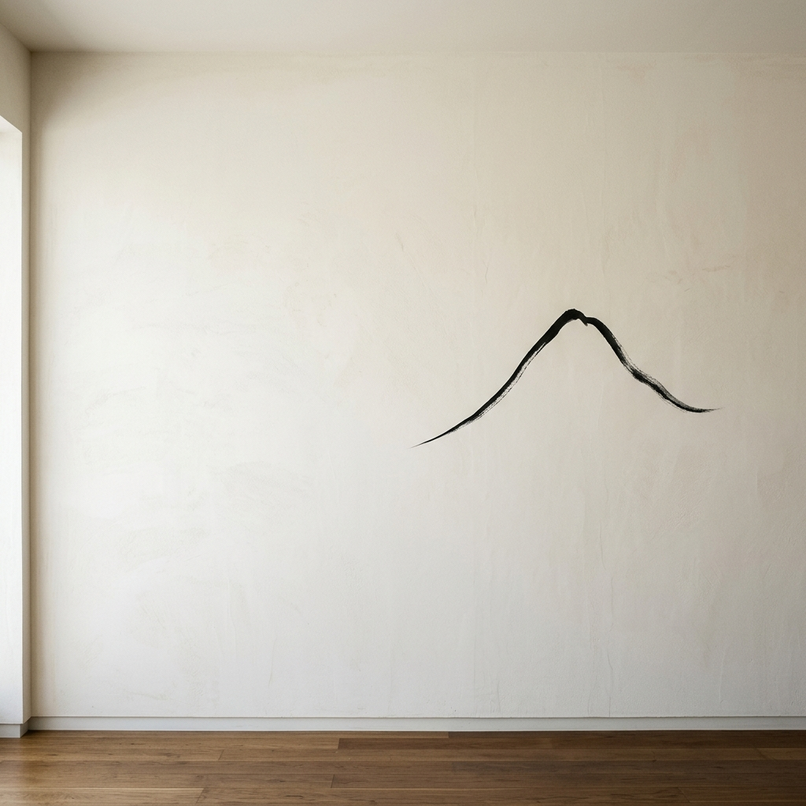
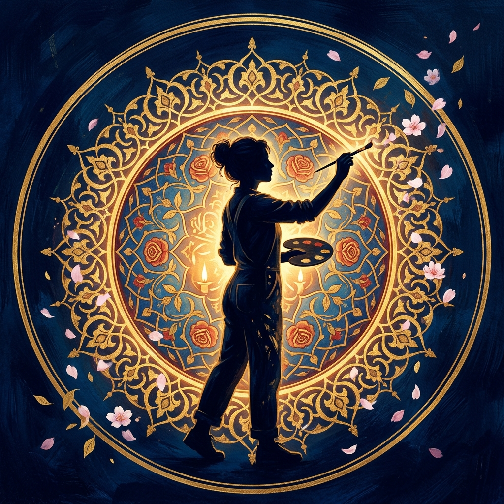
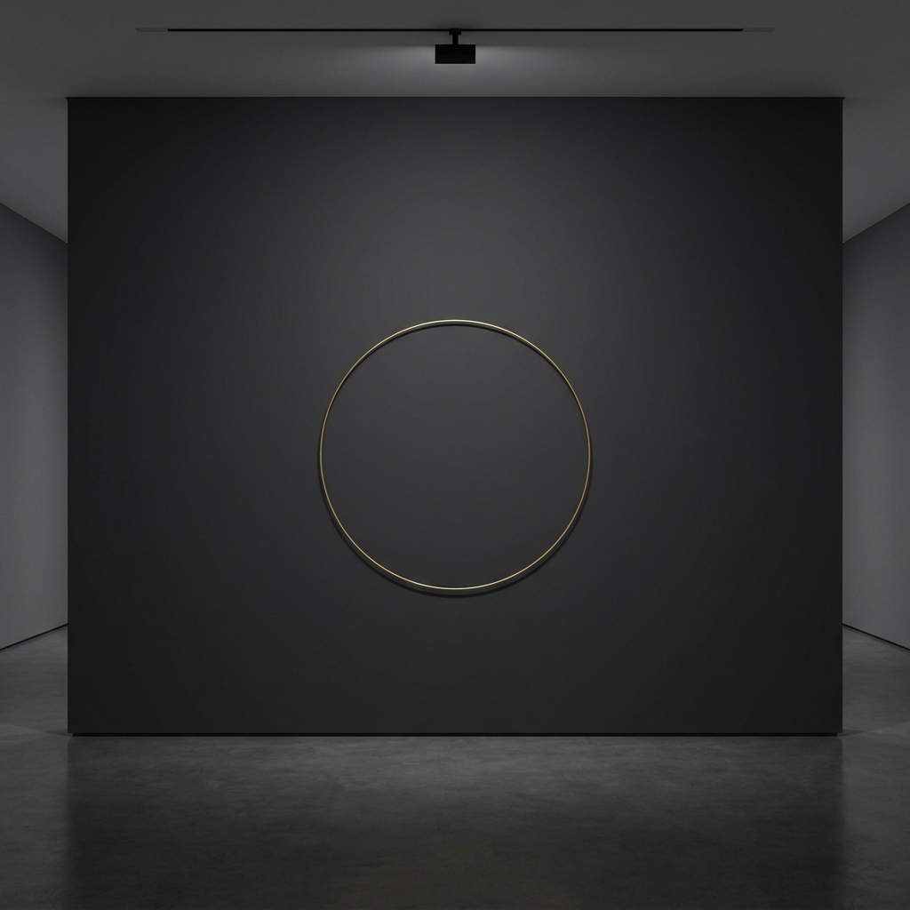
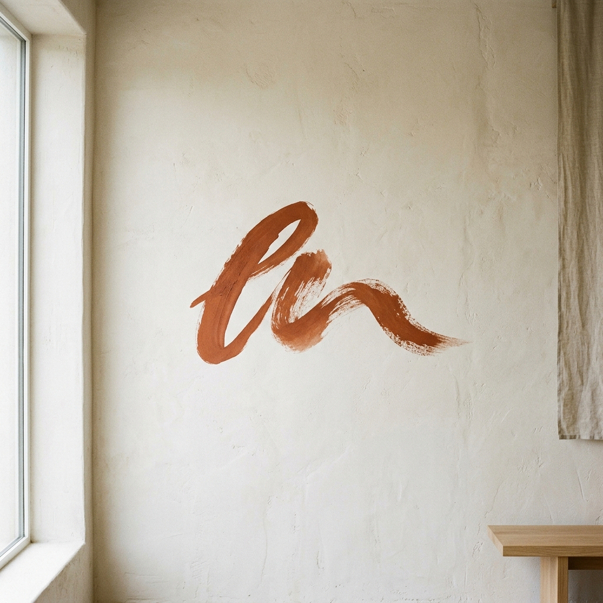
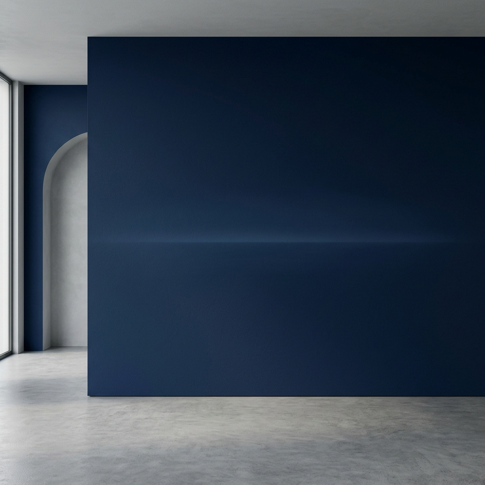

Her mekânın kendi ruhu vardır. Ben o ruhu ortaya çıkarıyorum — kamış kalemin tek bir hamlesiyle beyaz kâğıda dökülen "Vav" harfi gibi. Az'ın içindeki sonsuzluk budur. Kocaeli'nden başlayan bu yolculuk, bugün Yalova, Bursa ve İstanbul'u kapsayan geniş bir sanat evrenine dönüştü.
Tasavvufta Kıllet üçlüsü — az konuş, az tüket, az meşgul ol — hem dervişin yaşamını hem de geleneksel Türk mekânını biçimlendirmiştir. Beyaz badanalı duvarlar, tek bir hat levhası, çok işlevli sedirler... Bu sadeliği her eserime taşıyorum.
Her bir eser, o mekânın hikâyesini anlatır.




İç ve dış mekânlara özgün, el yapımı duvar resimleri. Her boyut, her yüzey için uygulanabilir.
En PopülerMekânın ruhuna ve kullanıcısının kişiliğine göre özel tasarlanan kompozisyonlar.
Fikir aşamasından uygulamaya; taslak, renk paleti ve kompozisyon danışmanlığı.
Restoran, otel, ofis ve yaşam alanları için özel dekoratif yüzey uygulamaları.
Sadelikte gizlenen zenginlik,
az olanın içindeki sonsuzluk.
Kıllet; azlık, sadelik ve öz ile yetinme sanatıdır. Karmaşadan arındırılmış bir duvar, sadece bir boşluk değil, mekânın nefes aldığı, ruhun dinlendiği aktif bir alandır. Tasarımda Kıllet yaklaşımı, gereksiz her detayı silerek formun, rengin ve dokunun en saf halini ortaya çıkarır.
Projeniz için fiyat teklifi almak, konsült etmek veya sadece merhaba demek için bana ulaşın.